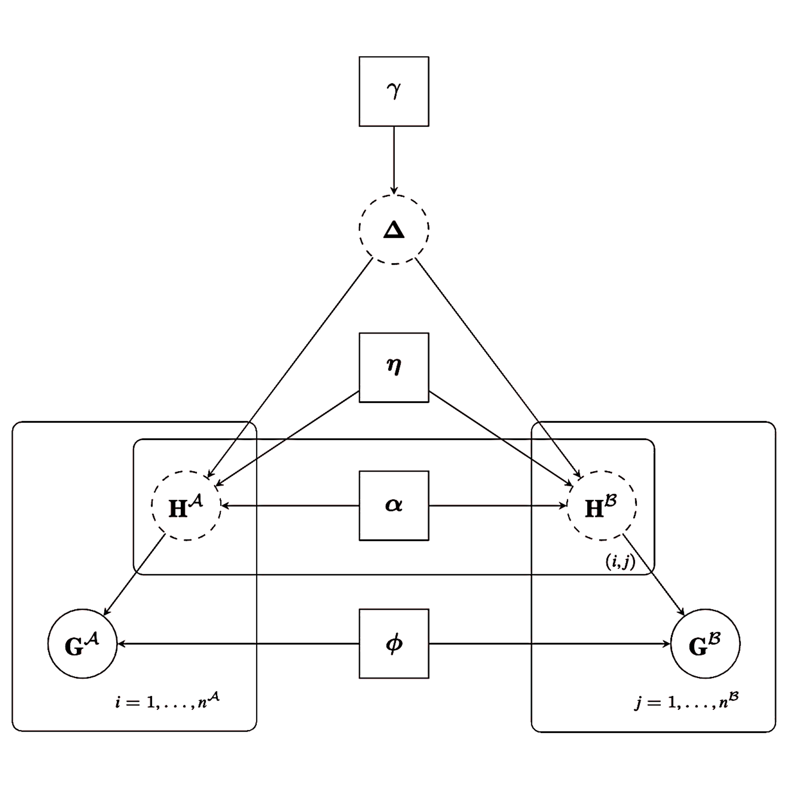
Linkage and Diagnostics with FlexRL
Source:vignettes/FlexRL-RL-vignette.Rmd
FlexRL-RL-vignette.RmdFlexRL is a package proposing flexible probabilistic
Record Linkage with diagnostic tools
for downstream inference on linked data. The record linkage algorithm
StEM() uses a Stochastic
Expectation Maximisation approach to
combine 2 data sources and outputs the set of records referring to the
same entities.
More details on the record linkage methodology; on the false discovery proportion estimation; and on the potential risks of downstream inference on linked data (Robach et al., in preparation).
This vignette uses example subsets from the SHIW
data, from the NLTCS
data, and synthetic data to showcase how FlexRL works, how
StEM() adapts to dynamic PIVs, how
RL_diagnostics may guide downstream inference.
We use 4 Partially Identifying
Variables to link the records: 2
variables such that dynamics = "stable" and 2 variables
that may change over time. Among these 2 dynamic PIVs, we will model the
changes of one (dynamics = "structured") and we will let
the algorithm flexible about the other
(dynamics = "flexible").
PIVs_config <- list( PIV1 = list(dynamics = "stable",
bound_mistakes = c(0.10,0.10),
fix_mistakes = c(NA,NA)),
PIV2 = list(dynamics = "stable",
bound_mistakes = c(0.10,0.10),
fix_mistakes = c(NA,NA)),
PIV3 = list(dynamics = "flexible",
bound_mistakes = c(NA,NA),
fix_mistakes = c(NA,NA)),
PIV4 = list(dynamics = "structured",
bound_mistakes = c(NA,NA),
fix_mistakes = c(0.02,0.02),
cond_hazard_cov = list(cov1 = c("Xe", "Xf"),
cov2 = c())) )
PIVs <- names(PIVs_config)
PIVs_type <- list( PIV1 = FALSE, PIV2 = FALSE, PIV3 = FALSE, PIV4 = FALSE )With PIVs that evolve over time, when modelling is possible, it is
natural to parametrise the probability that underlying true values of
the registered data for a pair of linked records coincide using a
survival function. It is possible to use an exponential model, whose
baseline hazard is constant in time; a Weibull model, whose baseline
hazard is monotone in time; a Gompertz model, whose baseline hazard
grows or decays exponentially in time; a piecewise-constant model, whose
baseline hazard takes one value on each interval defined by given cut
points; a custom model, supplied as a survival function
S(X, alpha, times) together with a number of parameters and
their starting values. These models may assume proportional hazards,
accelerated failure time, proportional odds, additive hazards, … If the
covariates are categorical, make sure to encode them into dummies and
drop one category (an intercept is included automatically). Since only
the agreement of the true values at the observed time gap is used, the
likelihood is the same for every model,
-sum(Hequal \* log(S) + (1 - Hequal) \* log(1 - S)), and
the parameters are estimated with stats::nlminb() at each
M-step.
n_values <- c(7, 8, 9, 10)
p_mistake <- list(PIV1 = c(0.02, 0.02), PIV2 = c(0.02, 0.02),
PIV3 = c(0.02, 0.02), PIV4 = c(0.02, 0.02))
p_missing <- list(PIV1 = c(0.005, 0.005), PIV2 = c(0.005, 0.005),
PIV3 = c(0.005, 0.005), PIV4 = c(0.005, 0.005))
cond_hazard_params <- list(PIV1 = c(), PIV2 = c(),
PIV3 = c(), PIV4 = c(-0.35, -0.50, -0.70))
gen_data <- simulate_data(PIVs_config = PIVs_config, n_values = n_values,
n_records = c(350, 400), n_links = 300, p_mistake = p_mistake,
p_missing = p_missing, cond_hazard_params = cond_hazard_params,
enforce_estimability = TRUE, model_dynamics = survival_model("exponential"))We pre-process the data for the record linkage task: remove the
records for which the linking variables are outside of the common
support, check that PIVs are not strongly associated with each other
(which may degrade record linkage performance), map PIV values to
natural numbers and encode missing values as 0. The StEM algorithm
denotes the smallest source as A and the largest as
B.
prep_data <- prepare_data(data1 = gen_data$data1, data2 = gen_data$data2,
label1 = "1", label2 = "2", PIVs_config = PIVs_config, same_mistakes = TRUE,
uniq_id = "entity_id", restrict_support_intersection = TRUE)
#> '2' is the larger source, saved as B; '1' saved as A.
head(prep_data$encodedA)
#> PIV1 PIV2 PIV3 PIV4 change date Xe Xf local_id entity_id source
#> 1 6 1 5 9 FALSE 0.0027 0.452 0.94 1 1 1
#> 2 7 8 8 10 FALSE 0.0016 1.128 0.90 2 2 1
#> 3 5 6 6 6 FALSE 0.0066 1.936 0.31 3 3 1
#> 4 3 2 6 2 FALSE 0.0018 1.150 0.69 4 4 1
#> 5 5 6 8 7 FALSE 0.0086 -0.625 -0.59 5 5 1
#> 6 6 6 5 3 FALSE 0.0021 0.061 -0.39 6 6 1
head(prep_data$encodedB)
#> PIV1 PIV2 PIV3 PIV4 change date local_id entity_id source
#> 1 6 1 5 9 FALSE 0.0067 1 1 2
#> 2 7 8 8 10 FALSE 0.0039 2 2 2
#> 3 5 6 6 6 FALSE 0.0046 3 3 2
#> 4 3 2 6 2 FALSE 0.0064 4 4 2
#> 5 5 6 8 7 FALSE 0.0075 5 5 2
#> 6 6 6 5 3 FALSE 0.0024 6 6 2For this example we know the true linkage structure.
head(prep_data$true_pairs)
#> 1 2
#> 1 1 1
#> 2 2 2
#> 3 3 3
#> 4 4 4
#> 5 5 5
#> 6 6 6The number of unique values per PIV gives information on their discriminating power:
prep_data$n_values
#> PIV1 PIV2 PIV3 PIV4
#> 7 8 9 10We gauge how hard the record linkage task is using a naive linkage approach: matching records on exact agreement of identifying information.
t0 <- Sys.time()
MeM <- peakRAMNew(naive_fit <- naive_linkage(PIVs = PIVs,
encodedA = prep_data$encodedA,
encodedB = prep_data$encodedB))
elapsed <- as.numeric(Sys.time() - t0, units = "secs")
df_results <- data.frame( matrix(NA, nrow = 13, ncol = 0) )
rownames(df_results) <- c("TP ",
"FP ",
"FN ",
"sensitivity ",
"FDP ",
"est. FDP score ",
"est. FDP* score ",
"est. FDP* synth ",
"max SMD ",
"min support IoU ",
"max MMD ",
"time (secs) ",
"memory (Mb) ")
true_pairs <- do.call(paste, c(prep_data$true_pairs, list(sep="_")))
linked_pairs <- do.call(paste, c(naive_fit, list(sep = "_")))
true_positive <- length( intersect(linked_pairs, true_pairs) )
false_positive <- length( setdiff(linked_pairs, true_pairs) )
false_negative <- length( setdiff(true_pairs, linked_pairs) )
sensitivity <- true_positive / (true_positive + false_negative)
fdp <- false_positive / (true_positive + false_positive)
df_results[1:5, "Naive "] <- c(true_positive,false_positive,
false_negative,sensitivity,fdp)
df_results[12:13,"Naive "] <- c(round(elapsed),round(MeM$Peak_RAM_Used_MiB))
df_results
#> Naive
#> TP 189.00
#> FP 90.00
#> FN 111.00
#> sensitivity 0.63
#> FDP 0.32
#> est. FDP score NA
#> est. FDP* score NA
#> est. FDP* synth NA
#> max SMD NA
#> min support IoU NA
#> max MMD NA
#> time (secs) 0.00
#> memory (Mb) 1.00We run record linkage with FlexRL. The data
should contain encodedA, encodedB, n_values, PIVs_config, same_mistakes.
StEM_iter, StEM_burnin and
gibbs_iter, gibbs_burnin are total number of
iterations (including burn-in) and iterations to be discarded as
burn-in. If music_on the algorithm opens a short tune in
the browser when it finishes. You can save_info_iter (save
environment information at each iteration) to
new_directory. You can set starting values of the algorithm
for parameters gamma and phi with gamma0,
phiA0, phiB0, and change the number of samples
drawn a posteriori to provide a linkage estimate with
n_post_sample (set to 1000 as default).
t0 <- Sys.time()
MeM <- peakRAMNew(fit <- StEM(data = prep_data))
elapsed <- as.numeric(Sys.time() - t0, units = "secs")The missing values and potential mistakes in the registration, the size of the overlapping set of records between the files, the total number of entities in the population, the low discriminative power of PIVs, PIVs potential dynamics across time, PIVs distribution, dependencies among PIVs, are obstacles to the linkage.
The algorithm returns: Delta, gamma,
eta, alpha, phi.
delta_result <- fit$Delta
delta_result <- delta_result[delta_result$x>0.5, ]
linked_pairs <- do.call(paste, c(delta_result[,c("i","j")], list(sep = "_")))
true_positive <- length( intersect(linked_pairs, true_pairs) )
false_positive <- length( setdiff(linked_pairs, true_pairs) )
false_negative <- length( setdiff(true_pairs, linked_pairs) )
sensitivity <- true_positive / (true_positive + false_negative)
fdp <- false_positive / (true_positive + false_positive)
df_results[1:5, "FlexRL "] <- c(true_positive,false_positive,
false_negative,sensitivity,fdp)
df_results[12:13,"FlexRL "] <- c(round(elapsed),round(MeM$Peak_RAM_Used_MiB))
df_results
#> Naive FlexRL
#> TP 189.00 199.00
#> FP 90.00 32.00
#> FN 111.00 101.00
#> sensitivity 0.63 0.66
#> FDP 0.32 0.14
#> est. FDP score NA NA
#> est. FDP* score NA NA
#> est. FDP* synth NA NA
#> max SMD NA NA
#> min support IoU NA NA
#> max MMD NA NA
#> time (secs) 0.00 102.00
#> memory (Mb) 1.00 115.00Let us run record linkage diagnostics:
diag <- RL_diagnostics(fit = fit, encodedA = prep_data$encodedA,
encodedB = prep_data$encodedB, compare_vars = PIVs,
vars_type_cont = PIVs_type, PIVs = PIVs,
true_pairs = prep_data$true_pairs, FDP_estimation = TRUE,
RL_method = "FlexRL", data = prep_data,
maxIter4CV = 1, n_repeats = 2)
df_results[6,"FlexRL "] <- diag$FDP_measures$curve$RL_FDP_score[1]
df_results[7,"FlexRL "] <- diag$FDP_measures$curve$augmRL_FDP_score[1]
df_results[8,"FlexRL "] <- diag$FDP_measures$curve$augmRL_FDP_synth[1]
smd_idx <- grep("smd", names(diag$discrepancy_measures))
iou_idx <- grep("iou", names(diag$discrepancy_measures))
mmd_idx <- grep("mmd", names(diag$discrepancy_measures))
df_results[9, "FlexRL "] <- max(diag$discrepancy_measures[1,smd_idx])
df_results[10,"FlexRL "] <- min(diag$discrepancy_measures[1,iou_idx])
df_results[11,"FlexRL "] <- max(diag$discrepancy_measures[1,mmd_idx])
diag # default, equivalent to print(diag)
#> <RL_diagnostics>
#>
#> Linked pairs (score > 0.50): 231
#>
#> FDP (true pairs): 0.139
#> Sensitivity (true pairs): 0.663
#>
#> FDP score estimate (RL task): min threshold 0.50: FDP ~ 0.137
#> threshold 0.50: FDP ~ 0.137
#> max threshold 0.99: FDP ~ 0.005
#> FDP score estimate (augmented RL task): min threshold 0.50: FDP ~ 0.149
#> threshold 0.50: FDP ~ 0.149
#> max threshold 0.99: FDP ~ 0.005
#> FDP synth estimate (augmented RL task): min threshold 0.50: FDP ~ 0.271
#> threshold 0.50: FDP ~ 0.271
#> max threshold 0.99: FDP ~ 0.000
#> The score-based estimator is valid when the linkage model is well calibrated to the data.
#> The synthetic-data estimator is valid when the augmented task is equivalent to the
#> original one, which requires links and non-links to have similar distributions; similar
#> score-based FDP estimates on the original and augmented tasks support this prerequisite.
#>
#> Multivariate MMD (linked A vs. A): 0.0035
#> Multivariate MMD (linked B vs. B): 0.0042
#>
#> IoU support PIV1 (linked A vs. A): 0.8571
#> IoU support PIV2 (linked A vs. A): 0.8750
#> IoU support PIV3 (linked A vs. A): 0.8889
#> IoU support PIV4 (linked A vs. A): 1.0000
#> IoU support PIV1 (linked B vs. B): 1.0000
#> IoU support PIV2 (linked B vs. B): 1.0000
#> IoU support PIV3 (linked B vs. B): 1.0000
#> IoU support PIV4 (linked B vs. B): 1.0000
#>
#> Agreement PIV1 (linked A vs. linked B): 0.9913
#> Agreement PIV2 (linked A vs. linked B): 0.9957
#> Agreement PIV3 (linked A vs. linked B): 0.9957
#> Agreement PIV4 (linked A vs. linked B): 0.7489
#> Agreement PIV1 (true pairs): 0.9533
#> Agreement PIV2 (true pairs): 0.9500
#> Agreement PIV3 (true pairs): 0.9400
#> Agreement PIV4 (true pairs): 0.7000
#>
#> SMD PIV1 values: {1, 4, 7, ...} (linked A vs. A): 0.0851, 0.0608, -0.0905, ...
#> SMD PIV2 values: {0, 2, 5, ...} (linked A vs. A): -0.0757, 0.0587, -0.0628, ...
#> SMD PIV3 values: {0, 4, 5, ...} (linked A vs. A): -0.0757, 0.0798, -0.0502, ...
#> SMD PIV4 values: {0, 1, 10, ...} (linked A vs. A): 0.0390, 0.0363, -0.0462, ...
#> SMD PIV1 values: {1, 2, 7, ...} (linked B vs. B): 0.0572, 0.0880, -0.0652, ...
#> SMD PIV2 values: {2, 5, 8, ...} (linked B vs. B): 0.0994, -0.0836, -0.1019, ...
#> SMD PIV3 values: {3, 4, 5, ...} (linked B vs. B): 0.0561, 0.1194, -0.0741, ...
#> SMD PIV4 values: {0, 4, 10, ...} (linked B vs. B): 0.0734, 0.0778, -0.0628, ...
print(diag, threshold = 0.75)
#> <RL_diagnostics>
#>
#> Linked pairs (score > 0.75): 176
#>
#> FDP (true pairs): 0.062
#> Sensitivity (true pairs): 0.550
#>
#> FDP score estimate (RL task): min threshold 0.50: FDP ~ 0.137
#> threshold 0.75: FDP ~ 0.064
#> max threshold 0.99: FDP ~ 0.005
#> FDP score estimate (augmented RL task): min threshold 0.50: FDP ~ 0.149
#> threshold 0.75: FDP ~ 0.065
#> max threshold 0.99: FDP ~ 0.005
#> FDP synth estimate (augmented RL task): min threshold 0.50: FDP ~ 0.271
#> threshold 0.75: FDP ~ 0.153
#> max threshold 0.99: FDP ~ 0.000
#> The score-based estimator is valid when the linkage model is well calibrated to the data.
#> The synthetic-data estimator is valid when the augmented task is equivalent to the
#> original one, which requires links and non-links to have similar distributions; similar
#> score-based FDP estimates on the original and augmented tasks support this prerequisite.
#>
#> Multivariate MMD (linked A vs. A): 0.0105
#> Multivariate MMD (linked B vs. B): 0.0104
#>
#> IoU support PIV1 (linked A vs. A): 0.8571
#> IoU support PIV2 (linked A vs. A): 0.8750
#> IoU support PIV3 (linked A vs. A): 0.8889
#> IoU support PIV4 (linked A vs. A): 1.0000
#> IoU support PIV1 (linked B vs. B): 1.0000
#> IoU support PIV2 (linked B vs. B): 0.8750
#> IoU support PIV3 (linked B vs. B): 1.0000
#> IoU support PIV4 (linked B vs. B): 1.0000
#>
#> Agreement PIV1 (linked A vs. linked B): 0.9943
#> Agreement PIV2 (linked A vs. linked B): 1.0000
#> Agreement PIV3 (linked A vs. linked B): 0.9943
#> Agreement PIV4 (linked A vs. linked B): 0.8011
#> Agreement PIV1 (true pairs): 0.9533
#> Agreement PIV2 (true pairs): 0.9500
#> Agreement PIV3 (true pairs): 0.9400
#> Agreement PIV4 (true pairs): 0.7000
#>
#> SMD PIV1 values: {1, 2, 7, ...} (linked A vs. A): 0.1113, 0.0939, -0.1079, ...
#> SMD PIV2 values: {2, 4, 8, ...} (linked A vs. A): 0.1196, 0.1366, -0.1049, ...
#> SMD PIV3 values: {2, 4, 8, ...} (linked A vs. A): 0.0786, 0.1154, -0.0859, ...
#> SMD PIV4 values: {2, 8, 9, ...} (linked A vs. A): -0.1040, 0.0755, 0.0757, ...
#> SMD PIV1 values: {1, 2, 7, ...} (linked B vs. B): 0.0822, 0.1447, -0.0829, ...
#> SMD PIV2 values: {2, 4, 8, ...} (linked B vs. B): 0.1641, 0.1350, -0.1520, ...
#> SMD PIV3 values: {2, 3, 4, ...} (linked B vs. B): 0.0938, 0.1029, 0.1573, ...
#> SMD PIV4 values: {4, 5, 8, ...} (linked B vs. B): 0.1237, -0.0938, 0.0820, ...These summaries provide information on the linked data. We can also look at: the convergence of the StEM algorithm parameters, the linkage scores distribution, the data distributions between linked subset and original data sources, the divergence metrics of the linked data from the data sources, the FDP estimation.
plot(diag, "convergence")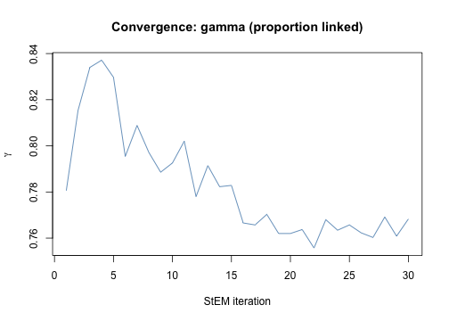
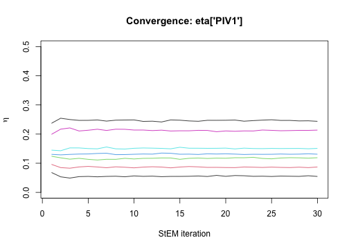
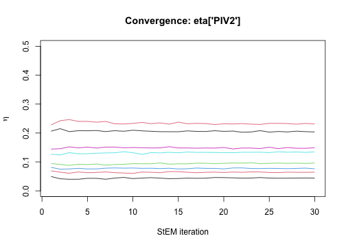
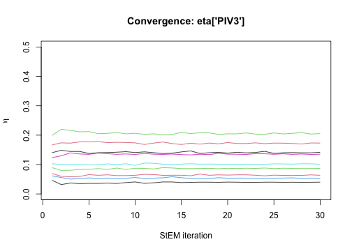
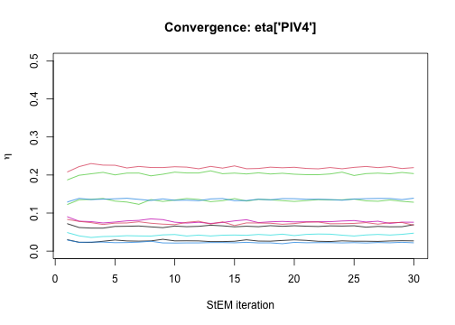
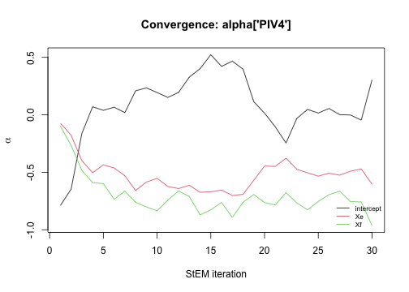
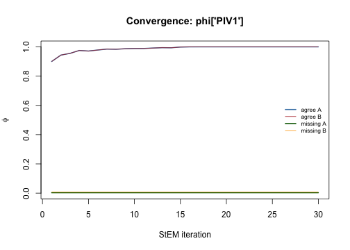
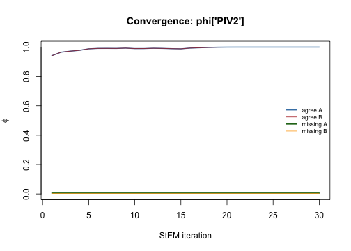
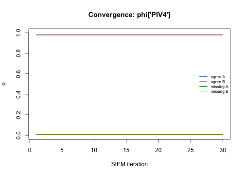
plot(diag, "scores")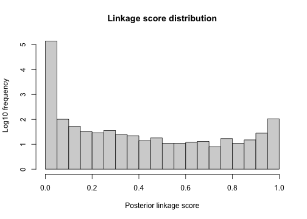
plot(diag, "distributions", threshold = 0.75)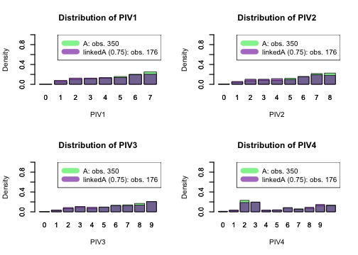
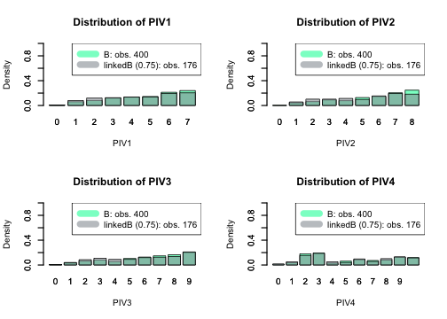
plot(diag, "discrepancy")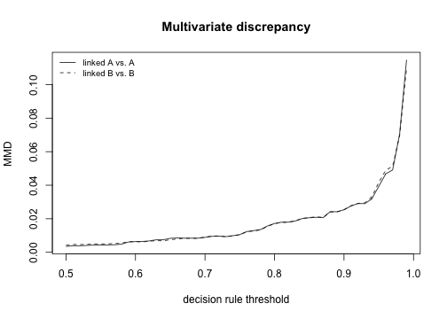
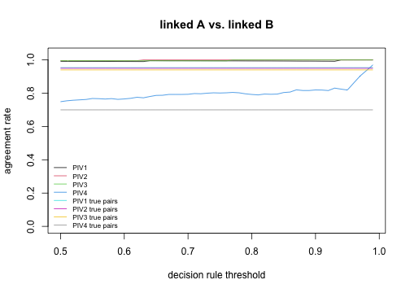
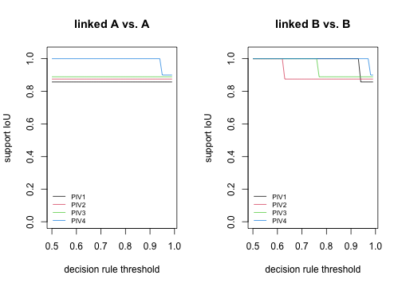
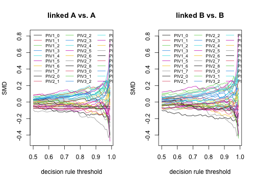
plot(diag, "FDP")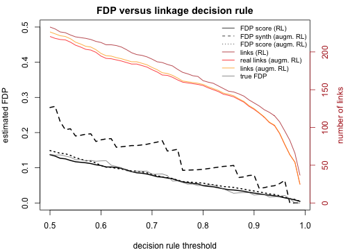
Several other algorithms for Record
Linkage have been developed so far in the literature.
Each has its own qualities and flaws. StEM() usually
outperforms in scenarios where the PIVs have low
discriminative power with few expected registration errors; it is
particularly efficient when there is enough information to model the
dynamics of some PIV changing across time (such as
postal code). In 2026, it is the only package taking account of dynamic
PIVs. More can be found on this topic in the simulation setting of the
methodology paper,
code is provided in FlexRL-experiments.
More can be found on the FDP estimation methods in this paper.
With link_with_<pkg>() wrappers we can link
records with “multilink”, “fastLink”, “BRL”, “reclin2”, “diyar”,
“fedmatch”.
brl_args <- list(flds = PIVs, types = rep("bi",length(PIVs)))
t0 <- Sys.time()
MeM <- peakRAMNew(fit_brl <- link_with_BRL(prep_data$encodedA,
prep_data$encodedB, brl_args))
elapsed <- as.numeric(Sys.time() - t0, units = "secs")
delta_result <- as.data.frame(fit_brl)
delta_result <- delta_result[delta_result$LinkScore>0.5, ]
linked_pairs <- do.call(paste, c(delta_result[,c("idxA","idxB")],
list(sep = "_")))
true_positive <- length( intersect(linked_pairs, true_pairs) )
false_positive <- length( setdiff(linked_pairs, true_pairs) )
false_negative <- length( setdiff(true_pairs, linked_pairs) )
sensitivity <- true_positive / (true_positive + false_negative)
fdp <- false_positive / (true_positive + false_positive)
df_results[1:5, "BRL "] <- c(true_positive,false_positive,
false_negative,sensitivity,fdp)
df_results[12:13,"BRL "] <- c(round(elapsed),round(MeM$Peak_RAM_Used_MiB))
diag_brl <- do.call(RL_diagnostics, c(list(fit_brl, prep_data$encodedA,
prep_data$encodedB, PIVs, PIVs_type,
PIVs, true_pairs = prep_data$true_pairs,
FDP_estimation = TRUE,
RL_method = "BRL", maxIter4CV = 1,
n_repeats = 2),
brl_args))
df_results[6,"BRL "] <- diag_brl$FDP_measures$curve$RL_FDP_score[1]
df_results[7,"BRL "] <- diag_brl$FDP_measures$curve$augmRL_FDP_score[1]
df_results[8,"BRL "] <- diag_brl$FDP_measures$curve$augmRL_FDP_synth[1]
smd_idx <- grep("smd", names(diag_brl$discrepancy_measures))
iou_idx <- grep("iou", names(diag_brl$discrepancy_measures))
mmd_idx <- grep("mmd", names(diag_brl$discrepancy_measures))
df_results[9, "BRL "] <- max(diag_brl$discrepancy_measures[1,smd_idx])
df_results[10,"BRL "] <- min(diag_brl$discrepancy_measures[1,iou_idx])
df_results[11,"BRL "] <- max(diag_brl$discrepancy_measures[1,mmd_idx])
multilink_args <- list(types = rep("bi",length(PIVs)),
breaks = list(PIV1 = NA, PIV2 = NA, PIV3 = NA, PIV4 = NA),
duplicates = c(0,0), n_iter = 500, max_cc_size = 50)
t0 <- Sys.time()
MeM <- peakRAMNew(fit_multilink <- link_with_multilink(prep_data$encodedA,
prep_data$encodedB,
multilink_args))
elapsed <- as.numeric(Sys.time() - t0, units = "secs")
delta_result <- as.data.frame(fit_multilink[c("idxA", "idxB")])
linked_pairs <- do.call(paste, c(delta_result[,c("idxA","idxB")],
list(sep = "_")))
true_positive <- length( intersect(linked_pairs, true_pairs) )
false_positive <- length( setdiff(linked_pairs, true_pairs) )
false_negative <- length( setdiff(true_pairs, linked_pairs) )
sensitivity <- true_positive / (true_positive + false_negative)
fdp <- false_positive / (true_positive + false_positive)
df_results[1:5, "multilink "] <- c(true_positive,false_positive,
false_negative,sensitivity,fdp)
df_results[12:13,"multilink "] <- c(round(elapsed),round(MeM$Peak_RAM_Used_MiB))
diag_multilink <- do.call(RL_diagnostics, c(list(fit_multilink, prep_data$encodedA,
prep_data$encodedB, PIVs,
PIVs_type, PIVs,
true_pairs = prep_data$true_pairs,
FDP_estimation = TRUE,
RL_method = "multilink",
maxIter4CV = 1, n_repeats = 2),
multilink_args))
df_results[6,"multilink "] <- diag_multilink$FDP_measures$curve$RL_FDP_score[1]
df_results[7,"multilink "] <- diag_multilink$FDP_measures$curve$augmRL_FDP_score[1]
df_results[8,"multilink "] <- diag_multilink$FDP_measures$curve$augmRL_FDP_synth[1]
smd_idx <- grep("smd", names(diag_multilink$discrepancy_measures))
iou_idx <- grep("iou", names(diag_multilink$discrepancy_measures))
mmd_idx <- grep("mmd", names(diag_multilink$discrepancy_measures))
df_results[9, "multilink "] <- max(diag_multilink$discrepancy_measures[1,smd_idx])
df_results[10,"multilink "] <- min(diag_multilink$discrepancy_measures[1,iou_idx])
df_results[11,"multilink "] <- max(diag_multilink$discrepancy_measures[1,mmd_idx])
fastLink_args <- list(varnames = PIVs, tol.em = 1e-06, threshold.match = 0.5,
return.all = TRUE, n.cores = 1 )
t0 <- Sys.time()
MeM <- peakRAMNew(fit_fastLink <- link_with_fastLink(prep_data$encodedA,
prep_data$encodedB,
fastLink_args))
elapsed <- as.numeric(Sys.time() - t0, units = "secs")
delta_result <- as.data.frame(fit_fastLink)
delta_result <- delta_result[delta_result$LinkScore>0.5, ]
linked_pairs <- do.call(paste, c(delta_result[,c("idxA","idxB")],
list(sep = "_")))
true_positive <- length( intersect(linked_pairs, true_pairs) )
false_positive <- length( setdiff(linked_pairs, true_pairs) )
false_negative <- length( setdiff(true_pairs, linked_pairs) )
sensitivity <- true_positive / (true_positive + false_negative)
fdp <- false_positive / (true_positive + false_positive)
df_results[1:5, "fastLink "] <- c(true_positive,false_positive,
false_negative,sensitivity,fdp)
df_results[12:13,"fastLink "] <- c(round(elapsed),round(MeM$Peak_RAM_Used_MiB))
diag_fastLink <- do.call(RL_diagnostics, c(list(fit_fastLink, prep_data$encodedA,
prep_data$encodedB, PIVs, PIVs_type,
PIVs, true_pairs = prep_data$true_pairs,
FDP_estimation = TRUE,
RL_method = "fastLink",
maxIter4CV = 1, n_repeats = 2),
fastLink_args))
df_results[6,"fastLink "] <- diag_fastLink$FDP_measures$curve$RL_FDP_score[1]
df_results[7,"fastLink "] <- diag_fastLink$FDP_measures$curve$augmRL_FDP_score[1]
df_results[8,"fastLink "] <- diag_fastLink$FDP_measures$curve$augmRL_FDP_synth[1]
smd_idx <- grep("smd", names(diag_fastLink$discrepancy_measures))
iou_idx <- grep("iou", names(diag_fastLink$discrepancy_measures))
mmd_idx <- grep("mmd", names(diag_fastLink$discrepancy_measures))
df_results[9, "fastLink "] <- max(diag_fastLink$discrepancy_measures[1,smd_idx])
df_results[10,"fastLink "] <- min(diag_fastLink$discrepancy_measures[1,iou_idx])
df_results[11,"fastLink "] <- max(diag_fastLink$discrepancy_measures[1,mmd_idx])
reclin2_args <- list(on = PIVs,
formula = stats::as.formula(paste("~", paste(PIVs, collapse = "+"))),
type = "mpost", add = TRUE, variable = "selected",
score = "mpost", threshold = 0.5)
t0 <- Sys.time()
MeM <- peakRAMNew(fit_reclin2 <- link_with_reclin2(prep_data$encodedA,
prep_data$encodedB,
reclin2_args))
elapsed <- as.numeric(Sys.time() - t0, units = "secs")
delta_result <- as.data.frame(fit_reclin2)
delta_result <- delta_result[delta_result$LinkScore>0.5, ]
linked_pairs <- do.call(paste, c(delta_result[,c("idxA","idxB")],
list(sep = "_")))
true_positive <- length( intersect(linked_pairs, true_pairs) )
false_positive <- length( setdiff(linked_pairs, true_pairs) )
false_negative <- length( setdiff(true_pairs, linked_pairs) )
sensitivity <- true_positive / (true_positive + false_negative)
fdp <- false_positive / (true_positive + false_positive)
df_results[1:5, "reclin2 "] <- c(true_positive,false_positive,
false_negative,sensitivity,fdp)
df_results[12:13,"reclin2 "] <- c(round(elapsed),round(MeM$Peak_RAM_Used_MiB))
diag_reclin2 <- do.call(RL_diagnostics, c(list(fit_reclin2, prep_data$encodedA,
prep_data$encodedB, PIVs, PIVs_type,
PIVs, true_pairs = prep_data$true_pairs,
FDP_estimation = TRUE,
RL_method = "reclin2",
maxIter4CV = 1, n_repeats = 2),
reclin2_args))
df_results[6,"reclin2 "] <- diag_reclin2$FDP_measures$curve$RL_FDP_score[1]
df_results[7,"reclin2 "] <- diag_reclin2$FDP_measures$curve$augmRL_FDP_score[1]
df_results[8,"reclin2 "] <- diag_reclin2$FDP_measures$curve$augmRL_FDP_synth[1]
smd_idx <- grep("smd", names(diag_reclin2$discrepancy_measures))
iou_idx <- grep("iou", names(diag_reclin2$discrepancy_measures))
mmd_idx <- grep("mmd", names(diag_reclin2$discrepancy_measures))
df_results[9, "reclin2 "] <- max(diag_reclin2$discrepancy_measures[1,smd_idx])
df_results[10,"reclin2 "] <- min(diag_reclin2$discrepancy_measures[1,iou_idx])
df_results[11,"reclin2 "] <- max(diag_reclin2$discrepancy_measures[1,mmd_idx])
diyar_args <- list(probabilistic = TRUE, return_weights = TRUE)
t0 <- Sys.time()
MeM <- peakRAMNew(fit_diyar <- link_with_diyar(prep_data$encodedA[, PIVs],
prep_data$encodedB[, PIVs],
diyar_args))
elapsed <- as.numeric(Sys.time() - t0, units = "secs")
delta_result <- as.data.frame(fit_diyar[c("idxA", "idxB")])
linked_pairs <- do.call(paste, c(delta_result[,c("idxA","idxB")],
list(sep = "_")))
true_positive <- length( intersect(linked_pairs, true_pairs) )
false_positive <- length( setdiff(linked_pairs, true_pairs) )
false_negative <- length( setdiff(true_pairs, linked_pairs) )
sensitivity <- true_positive / (true_positive + false_negative)
fdp <- false_positive / (true_positive + false_positive)
df_results[1:5, "diyar "] <- c(true_positive,false_positive,
false_negative,sensitivity,fdp)
df_results[12:13,"diyar "] <- c(round(elapsed),round(MeM$Peak_RAM_Used_MiB))
names4diag <- c(PIVs, "local_id", "source")
diag_diyar <- do.call(RL_diagnostics, c(list(fit_diyar,
prep_data$encodedA[, names4diag],
prep_data$encodedB[, names4diag],
PIVs, PIVs_type, PIVs, true_pairs = prep_data$true_pairs,
FDP_estimation = TRUE, RL_method = "diyar",
maxIter4CV = 1, n_repeats = 2),
diyar_args))
df_results[6,"diyar "] <- diag_diyar$FDP_measures$curve$RL_FDP_score[1]
df_results[7,"diyar "] <- diag_diyar$FDP_measures$curve$augmRL_FDP_score[1]
df_results[8,"diyar "] <- diag_diyar$FDP_measures$curve$augmRL_FDP_synth[1]
smd_idx <- grep("smd", names(diag_diyar$discrepancy_measures))
iou_idx <- grep("iou", names(diag_diyar$discrepancy_measures))
mmd_idx <- grep("mmd", names(diag_diyar$discrepancy_measures))
df_results[9, "diyar "] <- max(diag_diyar$discrepancy_measures[1,smd_idx])
df_results[10,"diyar "] <- min(diag_diyar$discrepancy_measures[1,iou_idx])
df_results[11,"diyar "] <- max(diag_diyar$discrepancy_measures[1,mmd_idx])
fedmatch_args <- list(by = PIVs, match_type = "multivar",
unique_key_1 = "unique_key_A",
unique_key_2 = "unique_key_B",
multivar_settings = fedmatch::build_multivar_settings(
compare_type = rep("indicator", length(PIVs)),
wgts = rep(1/length(PIVs), length(PIVs))))
t0 <- Sys.time()
MeM <- peakRAMNew(fit_fedmatch <- link_with_fedmatch(prep_data$encodedA,
prep_data$encodedB,
fedmatch_args))
elapsed <- as.numeric(Sys.time() - t0, units = "secs")
delta_result <- as.data.frame(fit_fedmatch)
delta_result <- delta_result[delta_result$LinkScore>0.5, ]
linked_pairs <- do.call(paste, c(delta_result[,c("idxA","idxB")],
list(sep = "_")))
true_positive <- length( intersect(linked_pairs, true_pairs) )
false_positive <- length( setdiff(linked_pairs, true_pairs) )
false_negative <- length( setdiff(true_pairs, linked_pairs) )
sensitivity <- true_positive / (true_positive + false_negative)
fdp <- false_positive / (true_positive + false_positive)
df_results[1:5, "fedmatch "] <- c(true_positive,false_positive,
false_negative,sensitivity,fdp)
df_results[12:13,"fedmatch "] <- c(round(elapsed),round(MeM$Peak_RAM_Used_MiB))
diag_fedmatch <- do.call(RL_diagnostics, c(list(fit_fedmatch, prep_data$encodedA,
prep_data$encodedB, PIVs, PIVs_type,
PIVs, true_pairs = prep_data$true_pairs,
FDP_estimation = TRUE,
RL_method = "fedmatch",
maxIter4CV = 1, n_repeats = 2),
fedmatch_args))
df_results[6,"fedmatch "] <- diag_fedmatch$FDP_measures$curve$RL_FDP_score[1]
df_results[7,"fedmatch "] <- diag_fedmatch$FDP_measures$curve$augmRL_FDP_score[1]
df_results[8,"fedmatch "] <- diag_fedmatch$FDP_measures$curve$augmRL_FDP_synth[1]
smd_idx <- grep("smd", names(diag_fedmatch$discrepancy_measures))
iou_idx <- grep("iou", names(diag_fedmatch$discrepancy_measures))
mmd_idx <- grep("mmd", names(diag_fedmatch$discrepancy_measures))
df_results[9, "fedmatch "] <- max(diag_fedmatch$discrepancy_measures[1,smd_idx])
df_results[10,"fedmatch "] <- min(diag_fedmatch$discrepancy_measures[1,iou_idx])
df_results[11,"fedmatch "] <- max(diag_fedmatch$discrepancy_measures[1,mmd_idx])We also investigate how does the FlexRL record linkage compares with and without taking account of temporal dynamics among PIVs.
PIVs_config_WhatIfStable <- list( PIV1 = list(dynamics = "stable",
bound_mistakes = c(0.10,0.10),
fix_mistakes = c(NA,NA)),
PIV2 = list(dynamics = "stable",
bound_mistakes = c(0.10,0.10),
fix_mistakes = c(NA,NA)),
PIV3 = list(dynamics = "flexible",
bound_mistakes = c(NA,NA),
fix_mistakes = c(NA,NA)),
PIV4 = list(dynamics = "flexible",
bound_mistakes = c(NA,NA),
fix_mistakes = c(NA,NA)) )
prep_data_WhatIfStable <- prepare_data(data1 = gen_data$data1,
data2 = gen_data$data2, label1 = "1", label2 = "2",
PIVs_config = PIVs_config_WhatIfStable, same_mistakes = TRUE,
uniq_id = "entity_id", restrict_support_intersection = TRUE)
t0 <- Sys.time()
MeM <- peakRAMNew(fit <- StEM(data = prep_data_WhatIfStable))
elapsed <- as.numeric(Sys.time() - t0, units = "secs")
delta_result <- fit$Delta
delta_result <- delta_result[delta_result$x>0.5, ]
linked_pairs <- do.call(paste, c(delta_result[,c("i","j")], list(sep = "_")))
true_positive <- length( intersect(linked_pairs, true_pairs) )
false_positive <- length( setdiff(linked_pairs, true_pairs) )
false_negative <- length( setdiff(true_pairs, linked_pairs) )
sensitivity <- true_positive / (true_positive + false_negative)
fdp <- false_positive / (true_positive + false_positive)
df_results[1:5, "FlexRL (no dynamic) "] <- c(true_positive,false_positive,
false_negative,sensitivity,fdp)
df_results[12:13,"FlexRL (no dynamic) "] <- c(round(elapsed),round(MeM$Peak_RAM_Used_MiB))
diag <- RL_diagnostics(fit = fit, encodedA = prep_data_WhatIfStable$encodedA,
encodedB = prep_data_WhatIfStable$encodedB,
compare_vars = PIVs, vars_type_cont = PIVs_type,
PIVs = PIVs, true_pairs = prep_data_WhatIfStable$true_pairs,
FDP_estimation = TRUE, RL_method = "FlexRL",
data = prep_data_WhatIfStable,
maxIter4CV = 1, n_repeats = 2)
df_results[6,"FlexRL (no dynamic) "] <- diag$FDP_measures$curve$RL_FDP_score[1]
df_results[7,"FlexRL (no dynamic) "] <- diag$FDP_measures$curve$augmRL_FDP_score[1]
df_results[8,"FlexRL (no dynamic) "] <- diag$FDP_measures$curve$augmRL_FDP_synth[1]
smd_idx <- grep("smd", names(diag$discrepancy_measures))
iou_idx <- grep("iou", names(diag$discrepancy_measures))
mmd_idx <- grep("mmd", names(diag$discrepancy_measures))
df_results[9, "FlexRL (no dynamic) "] <- max(diag$discrepancy_measures[1,smd_idx])
df_results[10,"FlexRL (no dynamic) "] <- min(diag$discrepancy_measures[1,iou_idx])
df_results[11,"FlexRL (no dynamic) "] <- max(diag$discrepancy_measures[1,mmd_idx])
df_results[is.na(df_results)] <- NA
cat("Record Linkage ")
#> Record Linkage
knitr::kable(df_results[1:5,], digits = 2, align=rep('c', ncol(df_results)))| Naive | FlexRL | BRL | multilink | fastLink | reclin2 | diyar | fedmatch | FlexRL (no dynamic) | |
|---|---|---|---|---|---|---|---|---|---|
| TP | 189.00 | 199.00 | 180.00 | 186.00 | 160.00 | 178.00 | 97.00 | 199.00 | 164.00 |
| FP | 90.00 | 32.00 | 30.00 | 38.00 | 46.00 | 65.00 | 2.00 | 147.00 | 20.00 |
| FN | 111.00 | 101.00 | 120.00 | 114.00 | 140.00 | 122.00 | 203.00 | 101.00 | 136.00 |
| sensitivity | 0.63 | 0.66 | 0.60 | 0.62 | 0.53 | 0.59 | 0.32 | 0.66 | 0.55 |
| FDP | 0.32 | 0.14 | 0.14 | 0.17 | 0.22 | 0.27 | 0.02 | 0.42 | 0.11 |
cat("FDP estimation ")
#> FDP estimation
knitr::kable(df_results[6:8,], digits = 2, align=rep('c', ncol(df_results)))| Naive | FlexRL | BRL | multilink | fastLink | reclin2 | diyar | fedmatch | FlexRL (no dynamic) | |
|---|---|---|---|---|---|---|---|---|---|
| est. FDP score | NA | 0.14 | 0.18 | NA | 0.26 | 0.27 | NA | 0.1 | 0.12 |
| est. FDP* score | NA | 0.15 | 0.17 | NA | 0.28 | 0.32 | NA | 0.1 | 0.13 |
| est. FDP* synth | NA | 0.27 | 0.22 | 0.15 | 0.17 | 0.53 | 0 | NA | 0.25 |
cat("Linked divergence ")
#> Linked divergence
knitr::kable(df_results[9:11,], digits = 2, align=rep('c', ncol(df_results)))| Naive | FlexRL | BRL | multilink | fastLink | reclin2 | diyar | fedmatch | FlexRL (no dynamic) | |
|---|---|---|---|---|---|---|---|---|---|
| max SMD | NA | 0.12 | 0.16 | 0.13 | 0.14 | 0.21 | 0.37 | 0.08 | 0.17 |
| min support IoU | NA | 0.86 | 0.88 | 0.88 | 0.86 | 0.86 | 0.86 | 0.88 | 0.86 |
| max MMD | NA | 0.00 | 0.01 | 0.00 | 0.01 | 0.01 | 0.03 | 0.00 | 0.00 |
cat("Computational time and memory ")
#> Computational time and memory
knitr::kable(df_results[12:13,], digits = 2, align=rep('c', ncol(df_results)))| Naive | FlexRL | BRL | multilink | fastLink | reclin2 | diyar | fedmatch | FlexRL (no dynamic) | |
|---|---|---|---|---|---|---|---|---|---|
| time (secs) | 0 | 102 | 1 | 17 | 1 | 0 | 2 | 2 | 79 |
| memory (Mb) | 1 | 115 | 115 | 146 | 17 | 79 | 109 | 44 | 105 |